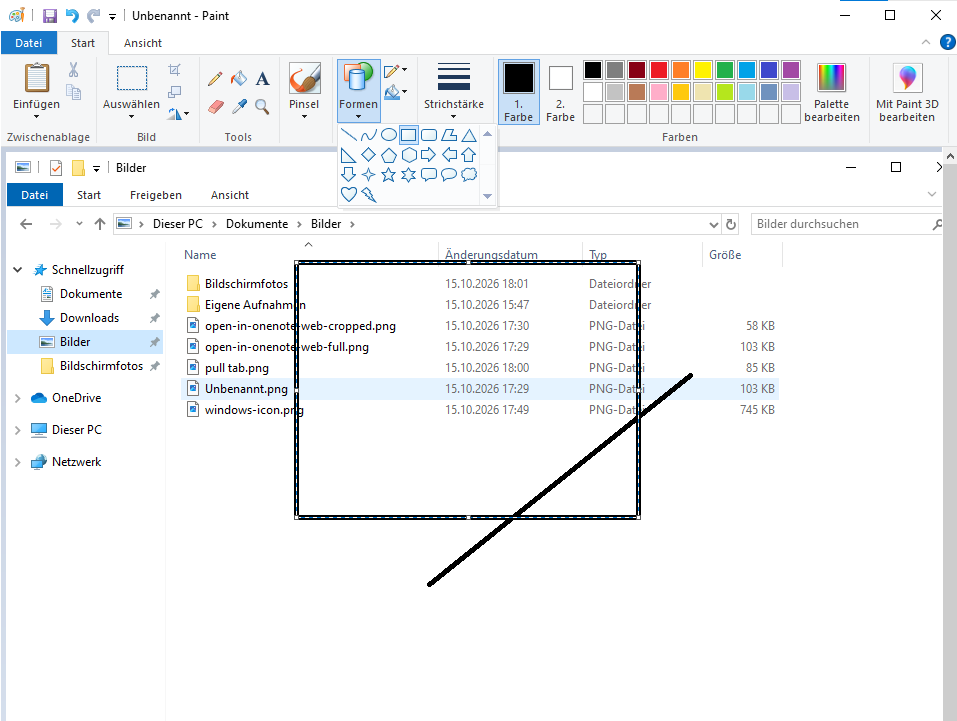
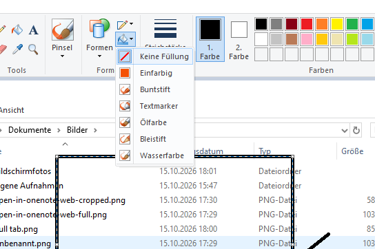
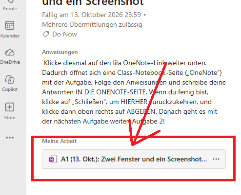

Windows 10
Aufgabe 3: Pfeile und Rahmen
Dein Ziel: Dein Screenshot zeigt einen Pfeil und einen Rahmen. Damit zeigst du, wo man klicken soll.
Die OneNote-Seite öffnen
- Öffne die passende Aufgabe in Teams.
- Suche unter Meine Arbeit den OneNote-Link.
- Klicke rechts neben dem Link auf die drei Punkte ….
- Klicke auf Öffnen in….
- Klicke auf OneNote für das Web.
Die OneNote-Seite öffnet sich in einem eigenen Tab in Edge. Lass den Teams-Tab offen.

1. Einen Screenshot in Paint öffnen
- Öffne eine Seite mit einem Knopf oder Link, zum Beispiel die Aufgaben in Teams.
- Drücke Windows + Umschalt + S. Ziehe ein Rechteck um den Teil, den du zeigen willst.
- Klicke auf Start. Tippe Paint. Öffne Paint.
- Drücke Strg + V. Dein Screenshot erscheint.

2. Einen Pfeil aus drei Linien zeichnen
Die fertigen Pfeile in Paint zeigen nach oben, unten, links oder rechts. Mit drei Linien kannst du einen Pfeil zeichnen, der auch schräg zeigt.
- Klicke oben auf Start. Öffne bei Bedarf das Menü Formen.
- Wähle die Linie: den einfachen geraden Strich.
- Klicke auf 1. Farbe. Wähle Rot. Wähle bei Strichstärke eine dickere Linie.
- Zeichne eine lange Linie bis zu dem Knopf oder Link. Halte dafür die linke Maustaste gedrückt, ziehe und lass los.
- Klicke neben die Linie. Wähle wieder die Linie.
- Zeichne an ihrem Ende zwei kurze Linien als Pfeilspitze. Klicke nach jeder Linie daneben. Die Spitze zeigt auf den Knopf oder Link.
3. Einen Rahmen zeichnen
- Wähle bei Formen das Rechteck.
- Klicke auf Füllung → Keine Füllung. So bleibt der Text sichtbar.
- Wähle bei Kontur eine durchgehende Linie. Wähle bei Strichstärke eine dickere Linie.
- Ziehe ein Rechteck um den Knopf oder Link. Lass los.
- Klicke einmal neben den Rahmen. Jetzt ist er fertig.


4. Das fertige Bild kopieren
- Drücke in Paint Strg + A. Damit wählst du das ganze Bild aus.
- Drücke Strg + C. Damit kopierst du das Bild mit Pfeil und Rahmen.
Meine Arbeit in OneNote
Klicke oben in Edge auf den Tab mit deiner OneNote-Seite.
Füge dein Bild unter dem Aufgabentext und über dem Beispielbild ein. Klicke dort auf eine freie Stelle. Drücke Strg + V.
Schreibe darunter: Mein Pfeil zeigt auf …
Prüfen und abgeben
- Mein Screenshot hat einen Pfeil und einen Rahmen.
- Die Pfeilspitze zeigt auf den richtigen Knopf oder Link.
- Der Text im Rahmen ist lesbar.
- Pfeil und Rahmen sind auch im eingefügten Bild sichtbar.
Klicke oben in Edge auf den Teams-Tab. Öffne dort wieder die passende Aufgabe, falls nötig. Klicke oben rechts auf Abgeben. Prüfe: Steht dort Abgegeben?